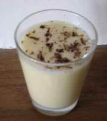

Faire fondre le chocolat blanc au bain marie avec la crème fraîche.
Une fois le chocolat fondu, ajouter 2 jaunes d’oeufs et 1 poignée de riz soufflé.
Battre les blancs très ferme.
Les incorporer doucement au mélange chocolaté.
Mettre dans des ramequins.
Les laisser une nuit au réfrigérateur.
Servir très très frais.
Les garnir avec la dernière poignée de riz soufflé qui croustillera lors de la dégustation.